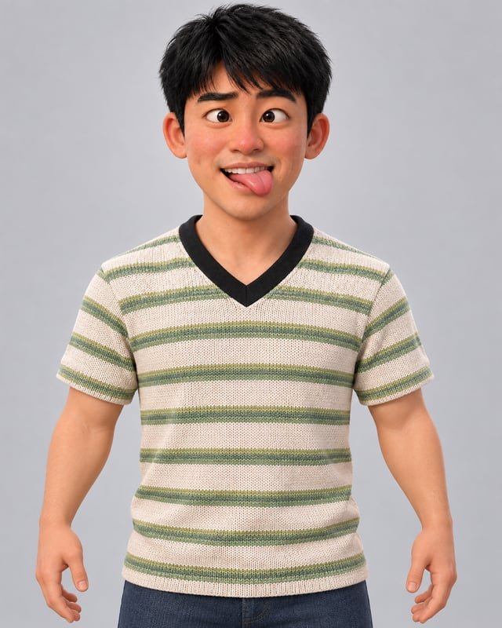

示例学校 · 校园活动策划
把好奇心，变成行动
这里是可替换的校园经历。 从一次校园活动开始，练习把想法写成方案、协调伙伴，再把现场照顾好。可以在这里介绍你的学校、专业、社团经历或具体项目。 替换成真实经历时，建议写清楚：你负责什么、采取了什么行动，以及最终结果。
- 参与校园活动的策划与执行，整理流程、分工和现场安排。
- 协调成员协作，收集参与者反馈并复盘改进。
Lam.A LITTLE ABOUT ME

每一段经历，都是我的一部分。
从这里开始，认识多一点的我。
图文履历可直接浏览；开启 JavaScript 后可尝试三维肖像。
这里是可替换的校园经历。 从一次校园活动开始，练习把想法写成方案、协调伙伴，再把现场照顾好。可以在这里介绍你的学校、专业、社团经历或具体项目。 替换成真实经历时，建议写清楚：你负责什么、采取了什么行动，以及最终结果。
这里是可替换的工作履历。 负责玩家接待、场次安排与体验流程，在剧情节奏、现场沟通和细节反馈之间，让一次游戏成为值得记住的体验。 可以加入你参与的主题、门店照片、团队合影或项目成绩。这些文字仅用于演示，不代表你的真实工作经历。
把走过的地方，变成身上的小贴纸。
点开一张，认识多一点的我。